SENJATA
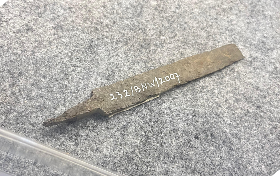Artefak senjata merupakan alat yang digunakan sejak masa lalu untuk berburu, pertahanan diri, dan peperangan. Terbuat dari batu, logam, atau kayu, senjata mencerminkan perkembangan teknologi, kekuatan militer, serta kondisi sosial budaya masyarakat pada masanya.
PEDANG & WARANGKA I
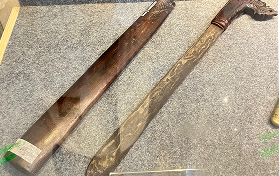Artefak perang dan warangka I bagian dari perlengkapan senjata tradisional yang digunakan pada masa lalu. Warangka berfungsi sebagai sarung senjata, sementara senjata perang digunakan untuk pertahanan dan konflik. Artefak ini mencerminkan teknologi persenjataan serta nilai budaya dan status sosial masyarakat pada masanya.
BADAN BILAH KERIS I
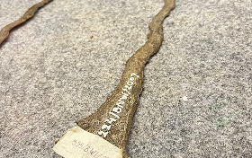Artefak badan bilah keris I merupakan bagian utama dari senjata tradisional keris yang dibuat sejak masa sejarah Nusantara. Bilah keris mencerminkan keahlian tempa logam, fungsi pertahanan, serta nilai simbolik dan budaya masyarakat pada masanya.Artefak sendok telah digunakan sejak masa lalu sebagai alat makan dan pengambil bahan makanan. Terbuat dari bahan seperti kayu, tulang, logam, atau keramik, sendok mencerminkan perkembangan kebiasaan makan dan teknologi masyarakat pada masanya.
GUCI CINA
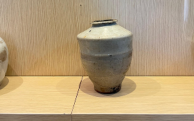Artefak guci Cina merupakan wadah keramik yang dibuat sejak masa dinasti-dinasti Cina dan masuk ke Nusantara melalui jalur perdagangan. Guci ini digunakan untuk penyimpanan dan memiliki nilai simbolik, mencerminkan kemajuan teknologi keramik serta hubungan dagang dan budaya masa lalu.
GUCI AKHIR DINASTI KING
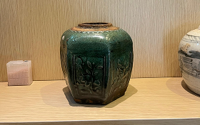Artefak guci akhir Dinasti Qing merupakan keramik Cina yang dibuat pada masa akhir Dinasti Qing (abad ke-19 awal abad ke-20) dan masuk ke Nusantara melalui perdagangan. Guci ini mencerminkan perkembangan akhir seni keramik Cina serta hubungan dagang dan budaya pada masa tersebut.
KUDI
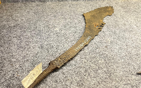Artefak kudi merupakan senjata tradisional sekaligus alat pertanian yang telah digunakan sejak masa lalu di Nusantara. Kudi mencerminkan keterampilan tempa logam serta fungsi ganda sebagai alat kerja dan simbol budaya masyarakat pada masanya.
MATA TOMBAK
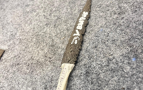Artefak mata tombak merupakan ujung senjata tradisional yang digunakan sejak masa lalu untuk berburu dan peperangan. Terbuat dari batu atau logam, mata tombak mencerminkan perkembangan teknologi persenjataan serta cara hidup masyarakat masa lalu.
PIRING BELANDA
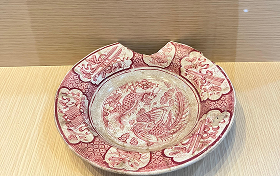Artefak piring Belanda merupakan keramik yang masuk ke Nusantara pada masa kolonial melalui perdagangan dan pemerintahan Belanda. Piring ini mencerminkan pengaruh budaya Eropa serta perkembangan industri keramik dan hubungan ekonomi pada masa tersebut.
GUCI CINA
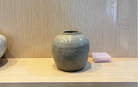Artefak guci Cina merupakan wadah keramik yang berkembang sejak masa dinasti-dinasti Cina dan masuk ke Nusantara melalui jalur perdagangan. Guci ini digunakan untuk menyimpan barang serta memiliki nilai simbolik, mencerminkan kemajuan teknologi keramik dan hubungan dagang masa lalu.
GUCI CINA
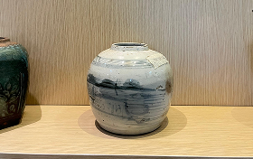Artefak guci Cina merupakan wadah keramik yang berkembang sejak masa dinasti-dinasti Cina dan masuk ke Nusantara melalui jalur perdagangan. Guci ini digunakan untuk menyimpan barang serta memiliki nilai simbolik, mencerminkan kemajuan teknologi keramik dan hubungan dagang masa lalu.
GUCI CINA
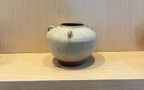Artefak guci Cina merupakan wadah keramik yang berkembang sejak masa dinasti-dinasti Cina dan masuk ke Nusantara melalui jalur perdagangan. Guci ini digunakan untuk menyimpan barang serta memiliki nilai simbolik, mencerminkan kemajuan teknologi keramik dan hubungan dagang masa lalu.
PIRING DINASTI

Artefak piring dinasti merupakan keramik yang berasal dari masa dinasti-dinasti Cina dan masuk ke Nusantara melalui jalur perdagangan. Piring ini mencerminkan perkembangan seni dan teknologi keramik serta hubungan dagang dan budaya masyarakat masa lalu.